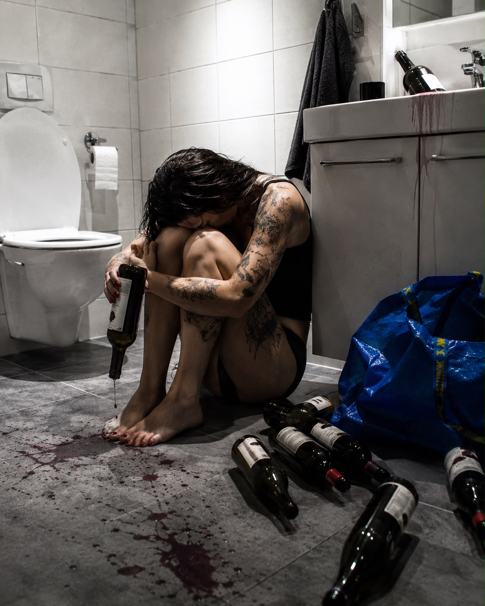

Hva faen holder jeg på med?
250 dager i dag.
Det hadde jeg aldri trodd på om noen fortalte meg det for 251 dager siden – at jeg skulle klart alle disse dagene uten.
Den siste kvelden jeg drakk vil for alltid stå for meg som en påminnelse om at jeg ikke kan drikke alkohol.
Ikke fordi jeg lagde en scene eller var ute på byen eller hadde havna oppi en farlig situasjon.
Nei.
Jeg var helt alene.
Det var natt.
Og jeg hadde drukket opp «kvota» mi.
Drukket opp hele flaska med vin.
Men jeg fant ikke ro.
Ikke hvile.
Så jeg bestemte meg for å åpne en flaske til.
Det var mot mine egne regler.
Men jo lenger jeg kom inn i avhengigheten,
jo mer flyttet jeg mine egne regler.
Mine egne grenser.
Jeg drakk et glass til.
Altfor fort.
Jeg ble kvalm.
Skikkelig kvalm.
Jeg måtte sette meg ned ved siden av doskåla.
Satt der til jeg kasta opp.
Vaska ansiktet.
Så meg ikke i speilet.
Ville ikke møte mitt eget blikk.
Satte meg i sofaen igjen.
Skjenka opp et glass til.
Det smakte helt jævlig.
Så begynte tårene å renne.
Hva faen holder jeg på med?
Flaska var halvfull enda.
Og jeg hadde enda flere flasker stående i boden.
Pent satt opp i gaveposene jeg hadde kjøpt.
De såkalte venninnegavene.
Jeg kunne jo ikke la hun på polet skjønne at ingen av dem var gaver.
Det lukta oppkast og rødvin av håret mitt.
Jeg tok en slurk til.
Så på de røde neglene mine som klamra seg rundt vinglasset.
Som om glasset skulle redde meg fra å synke.
Hvem prøvde jeg å lure?
Jeg satt allerede på bunn.
Jeg kunne ikke synke lavere.
Jeg så bort på bokhylla.
Nesbø.
Haley.
Irving.
Tikkanen.
Backman.
Samartin.
Jeg visste hvilke bøker som sto bak dem.
Skjult for andre å se.
Alcohol Explained.
The Big Book.
30 Day Alcohol Experiment.
Quit Like a Woman.
The Myth of Normal.
Jeg hadde lest dem alle.
Likevel satt jeg der.
Jeg gjemte meg selv like godt som de bøkene.
Bak en pen rekke romaner.
«Faen, Alise.
Er det sånn her du vil leve?»
Jeg så på telefonen.
«Hei. Føler meg ikke helt i form i dag. Vi får ta den caféturen neste uke.»
Hvor mange ganger hadde jeg utsatt den kaffen?
For hva?
For å sitte alene og drikke?
Jeg reiste meg.
Tok med flaska inn på badet.
Glasset var tomt.
Kvalmen kom i bølger.
Jeg tok en slurk rett av flaska.
Så møtte jeg mitt eget blikk i speilet.
Mascaraen hadde rent nedover kinnene.
Håret hang klistra til halsen.
Singleten hang løst på de spisse kragebeina.
Trusa var blitt for stor.
Jeg så nedover min egen kropp.
Når spiste jeg sist?
Jeg husket ikke.
«Hvem er du?»
Jeg sa det høyt.
«Jævla kjerring.
Ta deg sammen.»
Jeg helte ut flaska.
Løp inn på boden.
Måtte ta meg for så jeg ikke snubla.
Måtte forte meg før jeg ombestemte meg.
Dro fram alle flaskene.
Reiv dem ut av gaveposene.
Elleve stykker.
Alle hadde skrukork.
Selvfølgelig.
«Nå eller aldri, Alise.»
Alle flaskene opp i en blå IKEA-pose.
Over skulderen.
Støtta meg til veggen.
Måtte stoppe litt.
Kjente kvalmen i halsen.
Inn på badet igjen.
Helte dem ut.
Én etter én.
Måtte sette meg.
Hva har jeg gjort?
Hva faen gjør jeg nå?
For første gang på mange år
hadde jeg ingen plan.
Ingen vin i boden.
Ingen reserveflasker.
Ingen løgn å gjemme meg bak.
Bare meg.
Jeg satt lenge på det kalde badegulvet.
Jeg gråt.
Ikke fordi jeg hadde helt ut vin.
Men fordi jeg innerst inne visste
at jeg aldri kom til å kunne drikke normalt.
Det var den sorgen jeg satt med.
For jeg elsket jo alkoholen.
Den hadde vært min trøst.
Min pause.
Min flukt.
Min beste venn.
Helt til den ble mitt verste fengsel.
Jeg visste ikke hvordan jeg skulle leve uten den.
Jeg visste bare at jeg ikke orket å leve med den lenger.
